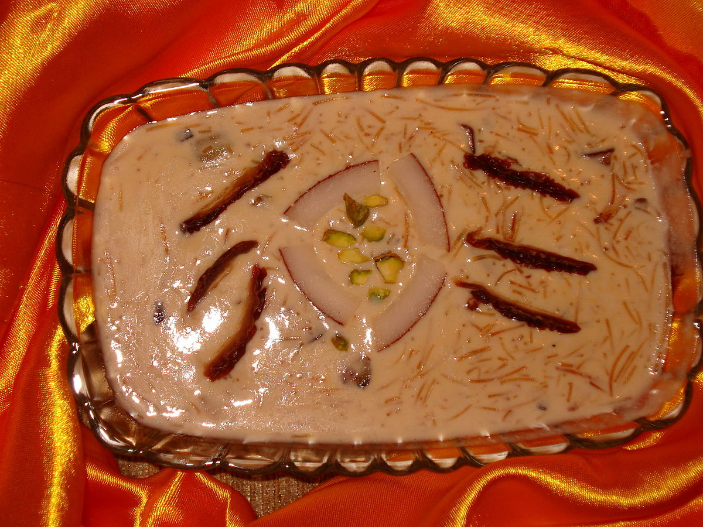

Etymology
The word Eid in Arabic, just means celebration
or
festival
. Fitr means breaking the fast
.
Therefore,
Eid ul-Fitr means Festival of breaking the fast
.
Practices

In Pakistan, Eid al-Fitr is also referred to as both Meethi Eid
(Sweet Eid
) and Choti Eid (Small Eid
).
People are supposed to give obligatory charity on behalf of
each of their family members to the needy or poor before Eid
day
or, minimally, Eid prayer, allowing for all to share in the joy of
Eid. At home, family members enjoy special Eid breakfast with
various types of sweets and desserts, including the traditional
dessert sheer khurma, which is made of vermicelli, milk, butter,
dry fruits, and dates. Eid is mainly enjoyed by the kids, as they
mostly receive money in cash called Eidi
as gift from their
relatives.
Eid Prayer
The Eid prayer is performed in congregation in open areas like fields, community centers, or mosques. No call to prayer is given for this Eid prayer, and it consists of only two units of prayer with a variable amount of Takbirs and other prayer elements depending on the branch of Islam observed.The Eid prayer is followed by the sermon and then a supplication asking for Allah's Almighty forgiveness, mercy, peace and blessings for all living beings across the world. The sermon also instructs Muslims as to the performance of rituals of Eid, such as the zakat. Listening to the sermon at Eid is optional. After the prayers, Muslims visit their relatives, friends, and acquaintances or hold large communal celebrations in homes, community centers, or rented halls.

Sadqah-E-Fitr
Zakat al-Fitr is a charity taken for the poor a few days before
the end of fasting in the Islamic holy month of Ramadan
. The Arabic word Fitr means the same as
iftar,
breaking a fast, and
it comes from the same root word as Futoo which means
breakfast. Zakat al Fitr is a smaller amount than Zakat al-Mal.

Eidi
Eidi is a gift that is usually given to
children by elder relatives and family friends
as part of
the celebration of the Muslim holiday: Eid al-Fitr. The most common type of eidi is a gift of
money to younger relatives and by giving eidi.
Special Eid breakfast
At home, family members enjoy special Eid breakfast with various types of sweets and desserts, including the traditional dessert sheer khurma, which is made of vermicelli, milk, butter, dry fruits, and dates.
